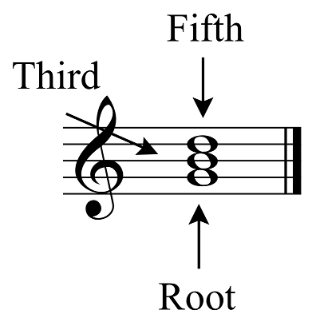

All music is made up of chords. Some are more common than others. On the left is a chord. It's made up of three notes. This is called a 'triad'. Pretty neat. Basically, if you want to play a triad on the piano, then press and hold each alternating key until you hold a total of three keys.